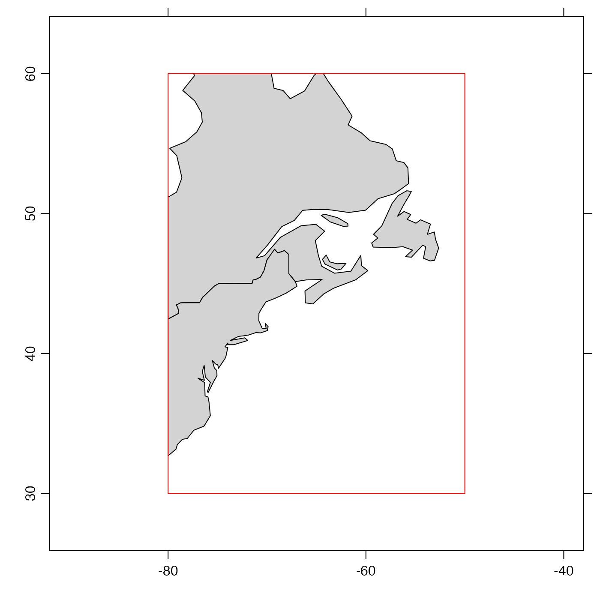

Subsets a coastline object according to limiting values for longitude and latitude. This uses functions in the raster package for some calculations, and so it will fail unless that package is installed.
# S4 method for coastline subset(x, subset, ...)
| x | a coastline object. |
|---|---|
| subset | An expression indicating how to subset |
| ... | optional additional arguments, the only one of which is considered
is one named |
A coastline object.
As illustrated in the “Examples”, subset must be an
expression that indicates limits on latitude and
longitude. The individual elements are provided in R notation,
not mathematical notation (i.e. 30<latitude<60 would not work).
Ampersands must be used to combine the limits. The simplest way
to understand this is to copy the example directly, and then modify
the stated limits. Note that > comparison is not permitted,
and that < is converted to <= in the calculation.
Similarly, && is converted to &. Spaces in the
expression are ignored. For convenience, longitude and
and latitude may be abbreviated as lon and lat,
as in the “Examples”.
Other things related to coastline data:
[[,coastline-method,
[[<-,coastline-method,
as.coastline(),
coastline-class,
coastlineBest(),
coastlineCut(),
coastlineWorld,
download.coastline(),
plot,coastline-method,
read.coastline.openstreetmap(),
read.coastline.shapefile(),
summary,coastline-method
Other functions that subset oce objects:
subset,adp-method,
subset,adv-method,
subset,amsr-method,
subset,argo-method,
subset,cm-method,
subset,ctd-method,
subset,echosounder-method,
subset,lobo-method,
subset,met-method,
subset,oce-method,
subset,odf-method,
subset,rsk-method,
subset,sealevel-method,
subset,section-method,
subset,topo-method,
subset,xbt-method
library(oce) data(coastlineWorld) ## Subset to a box centred on Nova Scotia, Canada if (requireNamespace("sf")) { cl <- subset(coastlineWorld, -80<lon & lon<-50 & 30<lat & lat<60) ## The plot demonstrates that the trimming is as requested. plot(cl, clon=-65, clat=45, span=6000) rect(-80, 30, -50, 60, bg="transparent", border="red") }#>